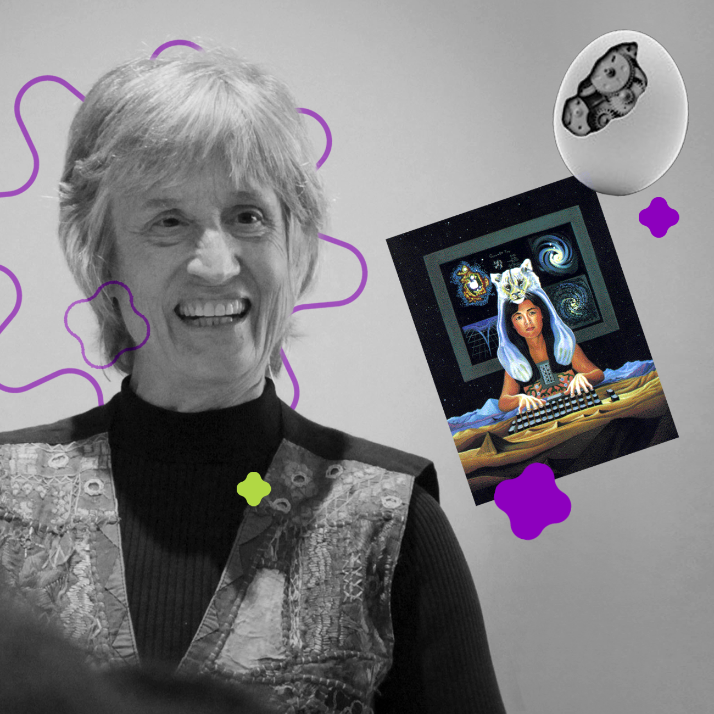

CYBORG
MANIFESTO
RADICAL LOVE
Radical Cyborg es un ensayo web que trata el análisis y vinculación crítica de dos proyectos enmarcados en el feminismo cyborg y el arte bioinformático de las autoras Donna Haraway y Heather Dewey-Hagborg.

DONNA HARAWAY
Donna Haraway es una es una académica, bióloga, filósofa y zoóloga
feminista que destaca por su mirada crítica dentro del post humanismo.
En su ensayo "A Cyborg Manifesto" en este plantea el cuestionamiento
hacia las limitaciones identitarias y las taxonomías binarias. En él
introduce el concepto del Cyborg como una propuesta nueva de individuo
híbrido el cual se caracteriza por tener, tanto una realidad virtual como
de ficción, un opositor de los dualismos que encarnan la sociedad, una criatura
que se caracteriza por ser opositiva y libre del concepto de género. El cyborg
se encuentra libre de una matriz epistemológica unitaria.
Heather Dewey-Hagborg
Heather Dewey-Hagborg es una artista de la información y bio-hacker.
Su proyecto “Radical Love” es una obra artística compuesta de dos retratos
impresos tridimensionalmente a partir del ADN de la prisionera trans Chelsea
Manning. El proyecto explora cómo los estereotipos de género se ven reflejados
en el fenotipado de ADN Forense y también otorga rostro al mensaje político de
una persona que realizó su transición de género al interior de la cárcel,
siendo una especulación de cómo sería su nuevo rostro.